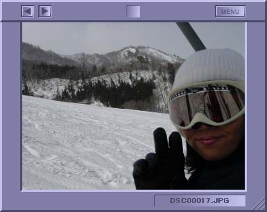

各部名称は以下の通りです。必要に応じてご参照ください。
| 【写真たて】 取扱説明書 | アイディア&&テクノロジー Freeware |
| Version 2.00 / Copyright 2001, 2002 Idea && Technology |
| コンテンツ |
| はじめに |
【写真たて】はドラッグ＆ドロップするだけで、大切な思い出の写真や、ご家族の写真、
恋人の写真をそっとデスクトップ上に置いておくことができるアプリケーションです。
お仕事の合間に、そっと目を【写真たて】に移してみて、
ほっとできるような、そんなアプリケーションを目指しました。

| 各部名称 |
| 対象となる OS / ハードウェア について |
| 変更履歴 |
| 本ソフトウェアについて |
本ソフトウェアはフリーウェアです。無償でお使いいただけます。ただし、本ソフトウェアで発生した、データロスト、システムフリーズを含む、いかなる不具合についても作者は責任を負わないものといたします。予めご理解・ご了承頂けます様、お願い申し上げます。
フリーウェアの定義に従い、本ソフトウェアの著作権はアイディア&&テクノロジー ぐっちーが保持するものとします。 しかし、本プログラム再配布は本インストーラに手を加えない場合で且つインストーラそのものの配布に限り、作者無許可にて行うことができます。インストーラ実行後に生成される全ての単体ファイルの配布を禁止致します。
本ソフトウェアはMicrosoft社 VisualC++ 6.0 で製作されました。Microsoft社 MFCライブラリを使用しております。また、Intel社 JPEGライブラリを使用しております。各ライブラリの使用許諾は各ライブラリ提供社が定める制限に準じます。詳細につきましては、各社ホームページを参照ください。
本ソフトウェアのインストーラは、bielic Setupを用いて作成されました。
責任の放棄を明文化しておりますが、不具合に関する個人プログラマができる範囲の対応はしたいと思います。こちらまで不具合のご連絡を頂ければ幸いと存じます。